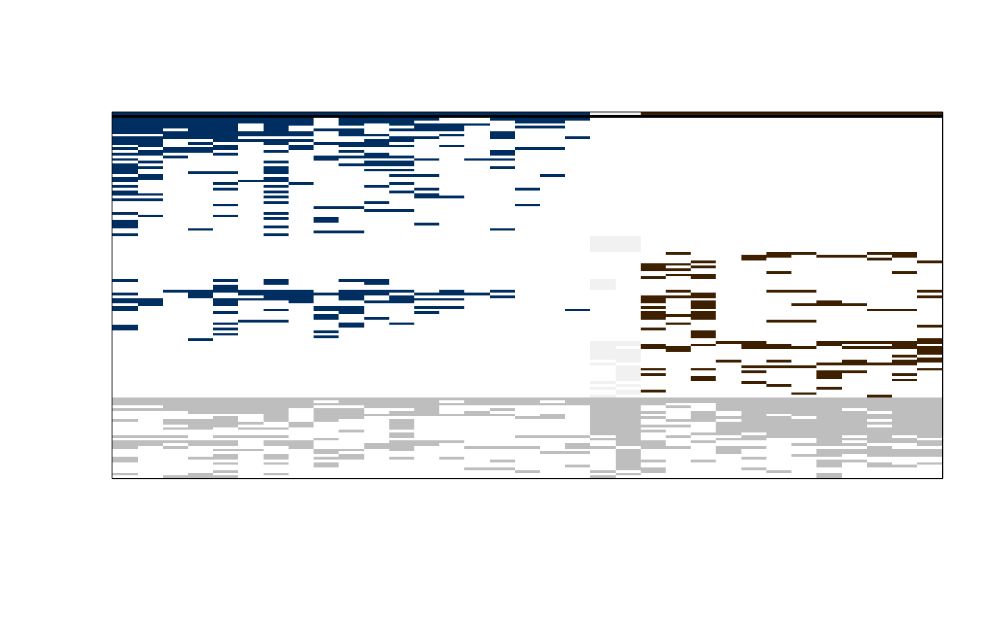
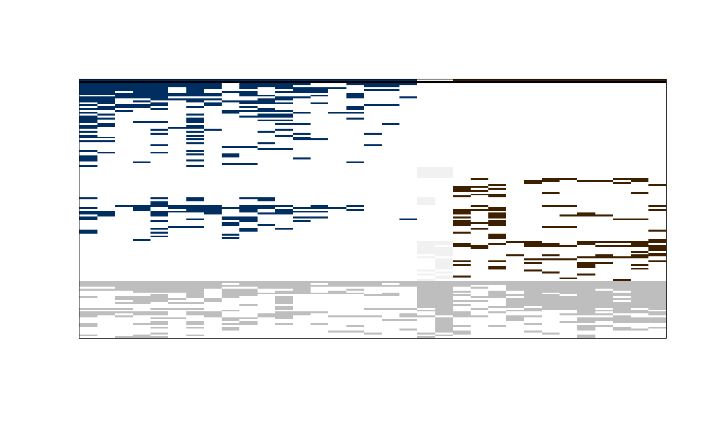

Total Differential Value optimization using a Simulated Annealing (and GRASP) algorithm(s)
Source:R/optim_tdv_simul_anne.R
optim_tdv_simul_anne.RdThis function searches for k-partitions of the columns of a given matrix
(i.e., partitions of the columns into k groups), optimizing the Total
Differential Value (TDV) using a stochastic global optimization method
known as the Simulated Annealing (SANN) algorithm. Optionally, a Greedy
Randomized Adaptive Search Procedure (GRASP) can be used to find an initial
partition (seed) to be passed to the SANN algorithm.
Usage
optim_tdv_simul_anne(
m_bin,
k,
p_initial = NULL,
n_runs = 10,
n_sol = 1,
t_inic = 0.3,
t_final = 1e-06,
alpha = 0.05,
n_iter = 1000,
use_grasp = TRUE,
thr = 0.95,
full_output = FALSE
)Arguments
- m_bin
A matrix. A phytosociological table of 0s (absences) and 1s (presences), where rows correspond to taxa and columns correspond to relevés.
- k
A numeric giving the number of desired groups.
- p_initial
A vector of integer numbers with the partition of the relevés (i.e., a
k-partition, consisting in a vector with values from 1 tok, with length equal to the number of columns ofm_bin, ascribing each relevé to one of thekgroups), to be used as initial partition in the Simulated Annealing. For a random partition usep_initial = "random". This argument is ignored ifuse_grasp = TRUE.- n_runs
A numeric giving the number of runs. Defaults to 10.
- n_sol
A numeric giving the number of best solutions to keep in the final output (only used if
full_outputisFALSE; iffull_outputisTRUEall runs will produce an output). Defaults to 1.- t_inic
A numeric giving the initial temperature. Must be greater than 0 and the maximum admitted value is 1. Defaults to 0.3.
- t_final
A numeric giving the final temperature. Must be bounded between 0 and 1. Usually very low values are needed to ensure convergence. Defaults to 0.000001.
- alpha
A numeric giving the fraction of temperature drop to be used in the temperature reduction scheme (see Details). Must be bounded between 0 and 1. Defaults to 0.05.
- n_iter
A numeric giving the number of iterations. Defaults to 1000.
- use_grasp
A logical. Defaults to
TRUE. IFTRUE, a GRASP is used to obtain the initial partitions for the Simulated Annealing. IfFALSEthe user should provide an initial partition or use or usep_initial = "random"for a random one.- thr
A numeric giving a threshold value (from 0 to 1 ) with the probability used to compute the sample quantile, in order to get the best
m_bincolumns from which to select one to be include in the GRASP solution (in each step of the procedure). Only needed ifuse_graspisTRUE.- full_output
A logical. Defaults to
FALSE. IfTRUEextra information is presented in the output. See Value.
Value
If full_output = FALSE (the default), a list with the following
components (the GRASP component is only returned if use_grasp = TRUE):
- GRASP
A list with at most
n_solcomponents, each one containing also a list with two components:- par
A vector with the partition of highest TDV obtained by GRASP;
- tdv
A numeric with the TDV of
par.
- SANN
A list with at most
n_solcomponents, each one containing also a list with two components:- par
A vector with the partition of highest TDV obtained by the (GRASP +) SANN algorithm(s);
- tdv
A numeric with the TDV of
par.
If full_output = TRUE, a list with the following components (the GRASP
component is only returned if use_grasp = TRUE):
- GRASP
A list with
n_runscomponents, each one containing also a list with two components:- par
A vector with the partition of highest TDV obtained by GRASP.
- tdv
A numeric with the TDV of
par.
- SANN
A list with
n_runscomponents, each one containing also a list with six components:- current.tdv
A vector of length
n_iterwith the current TDV of each SANN iteration.- alternative.tdv
A vector of length
n_iterwith the alternative TDV used in each SANN iteration.- probability
A vector of length
n_iterwith the probability used in each SANN iteration.- temperature
A vector of length
n_iterwith the temperature of each SANN iteration.- par
A vector with the partition of highest TDV obtained by the (GRASP +) SANN algorithm(s).
- tdv
A numeric with the TDV of
par.
Details
Given a phytosociological table (m_bin, with rows corresponding to
taxa and columns corresponding to relevés) this function searches for a
k-partition (k, defined by the user) optimizing the TDV, i.e.,
searches, using a SANN algorithm (optionally working upon GRASP solutions),
for a global maximum of TDV (by rearranging the relevés into k groups).
In the terminology of cluster analysis, taxa correspond to features, variables, or attributes, while relevés correspond to objects or samples.
This function uses two main algorithms:
An optional GRASP, which is used to obtain initial solutions (partitions of
m_bin) using functionpartition_tdv_grasp(). Such initial solutions are then submitted to the SANN algorithm.The (main) SANN algorithm, which is used to search for a global maximum of TDV. The initial partition for each run of SANN can be a partition obtained from GRASP (if
use_grasp = TRUE) or, (ifuse_grasp = FALSE), a partition given by the user (usingp_initial) or a random partition (usingp_initial = "random").
The SANN algorithm decreases the temperature multiplying the current
temperature by 1 - alpha according to a predefined schedule, which is
automatically calculated from the given values for t_inic, t_final,
alpha and n_iter.
Specifically, the cooling schedule is obtained calculating the number of
times that the temperature has to be decreased in order to approximate
t_final starting from t_inic. The number of times that the temperature
decreases, say nt, is calculated by the expression:
floor(log(t_final / t_inic) / log(1 - alpha)).
Finally, these decreasing stages are scattered through the desired
iterations (n_iter) homogeneously, by calculating the indices of the
iterations that will experience a decrease in temperature using
floor(n_iter / nt * (1:nt)).
SANN is often seen as an exploratory technique where the temperature
settings are challenging and dependent on the problem. This function tries
to restrict temperature values taking into account that TDV is always
between 0 and 1. Even though, obtaining values of temperature that allow
convergence can be challenging. full_output = TRUE allows the user to
inspect the behaviour of current.tdv and check if convergence fails.
Generally, convergence failure can be spotted when final SANN TDV values
are similar to the initial current.tdv, specially when coming from random
partitions. In such cases, as a rule of thumb, it is advisable to decrease
t_final by a factor of 10.
Author
Jorge Orestes Cerdeira and Tiago Monteiro-Henriques. E-mail: tmh.dev@icloud.com.
Examples
# Getting the Taxus baccata forests data set
data(taxus_bin)
# Removing taxa occurring in only one relevé in order to
# reproduce the example in the original article of the data set
taxus_bin_wmt <- taxus_bin[rowSums(taxus_bin) > 1, ]
# Obtaining a partition that maximizes TDV using the Simulated Annealing
# algorithm
result <- optim_tdv_simul_anne(
m_bin = taxus_bin_wmt,
k = 3,
p_initial = "random",
n_runs = 5,
n_sol = 5,
use_grasp = FALSE,
full_output = TRUE
)
# Inspect the result
# The TDV of each run
sapply(result[["SANN"]], function(x) x$tdv)
#> [1] 0.2005789 0.2005789 0.1958471 0.1958471 0.1699918
# The best partition that was found (i.e., with highest TDV)
result[["SANN"]][[1]]$par
#> [1] 3 3 3 3 2 2 3 3 3 3 3 3 3 3 1 1 1 1 1 1 1 1 1 1 1 1 1 1 1 1 1 1 1
# A TDV of 0.1958471 indicates you are probably reproducing the three
# groups (Estrela, Gerês and Galicia) from the original article. A solution
# with TDV = 0.2005789 might also occur, but note that one group has only two
# elements. For now, a minimum group size is not implemented in function
# optim_tdv_simul_anne() as it is in the function optim_tdv_hill_climb().
# Inspect how the optimization progressed (should increase towards the right)
plot(
result[["SANN"]][[1]]$current.tdv,
type = "l",
xlab = "Iteration number",
ylab = "TDV of the currently accepted solution"
)
for (run in 2:length(result[["SANN"]])) {
lines(result[["SANN"]][[run]]$current.tdv)
}
 # Plot the sorted (or tabulated) phytosociological table, using the best
# partition that was found
tabul <- tabulation(
m_bin = taxus_bin_wmt,
p = result[["SANN"]][[1]]$par,
taxa_names = rownames(taxus_bin_wmt),
plot_im = "normal"
)

# Plot the sorted (or tabulated) phytosociological table, using the best
# partition that was found
tabul <- tabulation(
m_bin = taxus_bin_wmt,
p = result[["SANN"]][[1]]$par,
taxa_names = rownames(taxus_bin_wmt),
plot_im = "normal"
)
